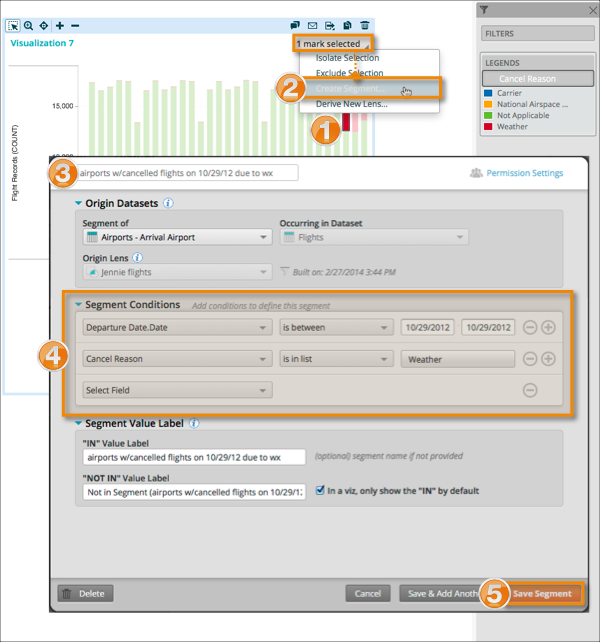

Segments can be created from a single selected mark in a viz. Platfora configures the
segment attributes for you. You can accept the attributes as is, or modify them
further.
Note: You can't create a segment from a mark if a vizboard computed field or another
segment field is in any drop zone in the viz.

-
Select a single mark in a viz.
-
Choose Create Segment from the viz selection menu.
-
Enter a name for the segment.
The name must be unique among segment names, dataset names, and field
names in the dataset that is being segmented. If the name conflicts with a field
name from the dataset that contains the segment, the segment will be created,
but not added to the viz. Platfora recommends using a very descriptive name.
There is no description field for segments to help other users understand the
criteria for segment membership. This name will appear in the list of available
fields for a viz when the segment is added to a viz.
Note: Segment names cannot
be changed later. Instead, you can create a copy of the segment, use a
different name for the copy, and delete the original
segment.
-
(Optional) Editing the pre-configured segment definition attributes, such as creating new conditions.
-
Click Save Segment.
Platfora creates the segment members lens and adds the segment to the
current viz lens panel as an available field. Segment field names are blue so
you can distinguish them from regular lens fields.
Note: If the segment definition does not
explicitly include a condition based on the fact dataset, Platfora displays
a message informing you of the implied condition on the fact dataset. You
can save the segment with the implied condition, or edit the segment to
create your own condition on the fact dataset.